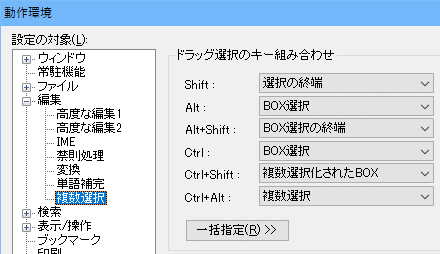

秀丸エディタ Ver.8.40以降では、「複数選択」が可能です。
エディタ画面上で、複数個所の選択を行い、同時に編集および各種変換、削除、コピーする事が可能です
複数選択を行う方法は、いくつかの方法があります。
マウスで複数選択を使う方法
マウスの場合は、複数選択箇所の修正ができないので、間違った場合は一度すべての選択を解除する必要があります。
キーボードで複数選択を行う方法
マウスに比べると、手順が複雑になりますが、選択の修正はやりやすいかもしれません。
検索を使う方法
「第II部〜知っていると便利な秀丸の機能 検索」に説明がありますが、 「すべて検索」の所に「すべて検索 - 複数選択」があります。
これを使用すれば、検索条件にマッチする箇所をすべて「複数選択」する事が可能です。 この状態から、マウスを使って複数選択を追加する事も出来ます。
実際に複数選択した状態です。(3箇所を選択している)

複数選択した状態で、キー入力を行うと、選択した箇所全てに同じ内容を入力できます。 (通常の範囲選択と同じで、選択した箇所を上書きします。)

複数選択した状態でコピーを行うと、複数選択した項目を改行で連結した文字列としてコピーされます。
貼り付け結果

複数選択後、カーソルキーの[←] or [→] で、カーソル位置を各範囲選択の先頭か末尾に一度だけ移動できます。 選択状態は解除されますが、複数選択中なので、そのまま入力を行うと、先頭 または末尾に追加されていきます。 複数選択が解除されているかどうかは、カーソルが複数あるかどうかで判断できます。
末尾にカーソルを移動し、追加した例

マウスで複数選択を使う場合、「動作環境−編集−複数選択」で、ドラッグ時のキー割り当てを変更できます。
キーボードで複数選択を行う場合、「複数選択予約」、「複数選択予約を選択」、「複数選択予約を消去、 「複数選択予約を全て消去」を何かのキーに割り当てておくと便利です。